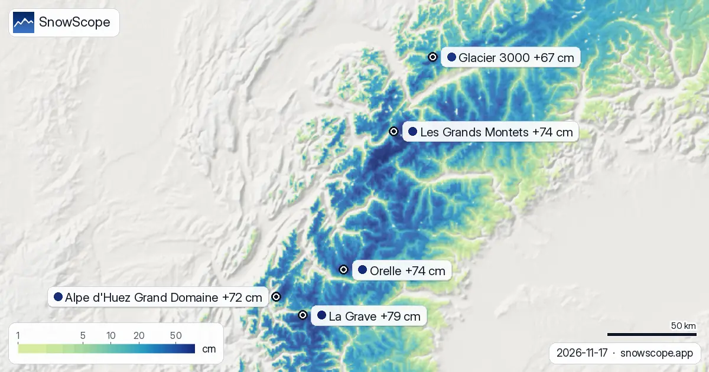

Courmayeur Leads Europe with 88 cm Forecast by Wednesday
This Sunday, November 15, 2026, our snow model predicts Courmayeur in the Italian Alps will receive the most new snow in Europe over the next 72 hours, with an estimated 88 cm. For North America, Kingvale in the US West is expected to see the most new snow, with 44 cm over the same period.
See the live snow forecast for Courmayeur in the SnowScope appSnow depth, powder alerts and the 3D map, free.
European Alps: Courmayeur and Les Grands Montets Top the List
In the European Alps, Courmayeur in Italy is set to receive the most new snow by Wednesday, November 18, with 88 cm expected on its upper slopes. This is a significant amount for mid-November. Close behind, Les Grands Montets in France is forecast to get 79 cm of new snow.
Other resorts in the French and Italian Alps are also expecting good snowfall. La Thuile ski, on the border of France and Italy, could see 78 cm, while Les Arcs and Orelle in France are both forecast to receive 77 cm. Glacier 3000 in Switzerland is also on the list with 73 cm expected.
| # | Resort | Region | +24 h | +72 h | Snow line |
|---|---|---|---|---|---|
| 1 | Courmayeur | Alps · Italy | 10 cm | 88 cm | 2,500 m |
| 2 | Les Grands Montets | Alps · France | 11 cm | 79 cm | 2,100 m |
| 3 | La Thuile ski | Alps · France / Italy | 9 cm | 78 cm | 2,200 m |
| 4 | Les Arcs | Alps · France | 9 cm | 77 cm | 2,100 m |
| 5 | Orelle | Alps · France | 8 cm | 77 cm | 2,500 m |
| 6 | Glacier 3000 | Alps · Switzerland | 13 cm | 73 cm | 2,400 m |
| 7 | Vichères-Bavon | Alps · Switzerland | 9 cm | 73 cm | 2,400 m |
| 8 | Sainte-Foy Tarentaise | Alps · France | 7 cm | 71 cm | 2,000 m |
| # | Resort | Region | +24 h | +72 h | Snow line |
|---|---|---|---|---|---|
| 1 | Kingvale | US West · United States | 10 in (25 cm) | 17 in (44 cm) | – |
| 2 | Mt. Shasta Ski Park | US West · United States | 2 in (4 cm) | 16 in (40 cm) | 4,300 ft (1,300 m) |
| 3 | Bear Valley | US West · United States | 7 in (19 cm) | 14 in (36 cm) | 5,200 ft (1,600 m) |
| 4 | Donner Ski Ranch | US West · United States | 7 in (19 cm) | 14 in (36 cm) | 5,200 ft (1,600 m) |
| 5 | Sierra-at-Tahoe | US West · United States | 7 in (18 cm) | 14 in (35 cm) | 5,600 ft (1,700 m) |
| 6 | Kirkwood | US West · United States | 6 in (16 cm) | 13 in (34 cm) | 5,600 ft (1,700 m) |
| 7 | Palisades Tahoe Alpine Meadows | US West · United States | 7 in (17 cm) | 13 in (32 cm) | 5,200 ft (1,600 m) |
| 8 | Homewood | US West · United States | 6 in (16 cm) | 12 in (30 cm) | – |
| # | Resort | Region | +24 h | +72 h | Snow line |
|---|---|---|---|---|---|
| 1 | Sasquatch | Western Canada · Canada | 17 cm | 17 cm | 900 m |
| 2 | Grouse Mountain | Western Canada · Canada | 16 cm | 17 cm | 900 m |
| 3 | Cypress Mountain | Western Canada · Canada | 13 cm | 14 cm | 900 m |
| 4 | Whistler Blackcomb | Western Canada · Canada | 13 cm | 13 cm | 900 m |
| 5 | Mt Seymour | Western Canada · Canada | 12 cm | 13 cm | 900 m |
| 6 | Banff Sunshine Village | Western Canada · Canada | 9 cm | 12 cm | 1,300 m |
| 7 | Ski Callaghan | Western Canada · Canada | 11 cm | 11 cm | 700 m |
| 8 | Mount Washington Alpine Resort | Western Canada · Canada | 10 cm | 11 cm | 800 m |

Against past winters
At about 1,976 m, Courmayeur has 27 cm today; a normal 15 November has 19 cm there.
Only one winter in ten has more than 46 cm on this date.
A week ago the same spot had 14 cm.
In past winters the best snow at Courmayeur usually came late February / early March.
An early lead like this matters most for the lower and middle runs, which usually wait until December for this much snow.

US West: Kingvale Leads with 44 cm
In the US West, Kingvale is forecast to receive the most new snow over the next 72 hours, with 44 cm (17 in) expected. Mt. Shasta Ski Park is also looking at a good amount, with 40 cm (16 in) by Wednesday. Bear Valley and Donner Ski Ranch are both forecast to get 36 cm (14 in).
The snow line in the US West will vary, with Mt. Shasta Ski Park seeing snow down to 1300 m (4265 ft) and other resorts like Bear Valley and Donner Ski Ranch expecting snow down to 1600 m (5249 ft).
Western Canada: Sasquatch and Grouse Mountain
Western Canada will also see new snow, though in smaller amounts compared to Europe and the US West. Sasquatch and Grouse Mountain are both forecast to receive 17 cm of new snow by Wednesday. Cypress Mountain and Whistler Blackcomb are expected to get 14 cm and 13 cm respectively.
The snow line in Western Canada will be relatively low, around 900 m for many resorts, meaning snow could fall at lower elevations.
Forecast Details for the Next 24 Hours
Looking at just the next 24 hours until Monday, November 16, Glacier 3000 in Switzerland is forecast to get the most new snow in Europe, with 13 cm. In the US West, Kingvale leads with 25 cm (10 in) expected. Sasquatch in Canada is forecast to receive 17 cm. These are our model estimates for the upper slopes.
Tips for skiers
- For the deepest new snow in Europe, focus on the upper slopes of Courmayeur and Les Grands Montets, where significant snowfall is expected by Wednesday.
- In the US West, Kingvale and Mt. Shasta Ski Park are good choices for fresh snow, especially at higher elevations where the snow will accumulate above the forecast snow line.
- Be aware that early-season snow can be thin, and rocks may be hidden under fresh snow. Always check local conditions and resort information.
- If you plan to go off-piste, always consult the official avalanche bulletin for the area.
- For the most up-to-date snow depths and forecasts, check the SnowScope app.
About these numbers
Resort snow depths are the deepest snow on the resort's upper slopes from the SnowScope snow model (about 1 km, run of 15 November); they are estimates for an area, not a measurement at one point. Station values are measurements on the date shown. Forecasts can change. Always read the official avalanche bulletin before going off-piste.
Official avalanche bulletins: EAWS (Europe) · avalanche.org (US) · Avalanche Canada
Cite this report
For research, teaching or the press: the numbers and charts are free to reuse under CC BY 4.0 with this citation.
SnowScope (2026), Courmayeur Leads Europe with 88 cm Forecast by Wednesday, https://snowscope.app/blog/en/2026/11/where-most-snow-falls-next-72-hours-15-november-2026.html, accessed 2026-11-15
SnowScope (Atlas Labs). (2026, November 15). Courmayeur Leads Europe with 88 cm Forecast by Wednesday. SnowScope snow reports. https://snowscope.app/blog/en/2026/11/where-most-snow-falls-next-72-hours-15-november-2026.html
BibTeX
@misc{snowscope2026wheremostsnowfallsnext72,
author = {{SnowScope (Atlas Labs)}},
title = {Courmayeur Leads Europe with 88 cm Forecast by Wednesday},
year = {2026},
month = nov,
howpublished = {\url{https://snowscope.app/blog/en/2026/11/where-most-snow-falls-next-72-hours-15-november-2026.html}},
note = {Published 2026-11-15 16:33 UTC; accessed 2026-11-15}
}· CC BY 4.0 · Methods, data and tools →
Courmayeur: snow and temperature by height, this winter vs last (tools) →
Follow Courmayeur
Free: a message when fresh snow is coming, and the forecast every morning.
More snow reports

France or Switzerland? Where the snow is better on 16 November. Snow cover, new snow, resorts and the days ahead in France on 16 November.

Switzerland: up to 85 cm of new snow on the way, most of it on Friday 20 November

Les Grands Montets saw 74 cm of new snow in the last 72 hours, with more forecast for the coming days, according to our model on November 17, 2026.